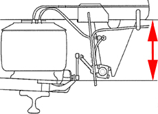
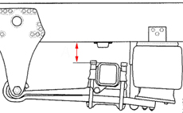

The vehicle will move up and down when the air suspension is calibrated. It is therefore extremely important that no persons or equipment remain in the area around or underneath the vehicle, to prevent damage or injury.
Note:
The correct settings for the normal ride height are shown in the table below.
If the ride height is set outside the permitted tolerance range, the vehicle will not attain the ride height and trouble codes will be stored.
Test conditions:
Ignition on with external air supply connected, or engine running.
The vehicle must be unladen.
The vehicle must be on level ground.
On vehicles with a lifting axle, this must be lowered.
Ensure that the button for the support shaft/load transfer and any alternative ride height (if the vehicle has this function) is released.
To prevent tension in the chassis during calibration, the parking brake must first be released. Secure the vehicle using chocks under the rear and front wheels before starting the procedure.
Procedure:
Normal ride height:
Enter the normal ride height for the front and rear using the control panel. The correct settings for the normal ride height are shown in the table below.
Calibrate the normal ride height.
Max. level:
Raise the vehicle to the shock absorber's upper mechanical stop at the front and rear using the control panel.
Calibrate the Max. level.
Min. level:
Lower the vehicle until the chassis rests on the impact member at the front and rear using the control panel. check that the lowering operation is not obstructed e.g. due to the bellows becoming crumpled.
Calibrate the normal ride height.
Stop the diagnostic procedure and switch off the ignition for at least 5 seconds.
Information on generation 3 bellows height settings.
Chassis height.
There are three different chassis heights which determine the calibration heights.
N stands for Normal, e.g. 4x2 N.
L stands for Low, e.g. 4x2 L.
E stands for Extra low, e.g. 4x2 E.
Front axle.

The front bellows height is measured between the underside of the chassis and the lower edge of the bellows' bottom roller body.
| Chassis | Chassis height | Bellows height | Ride height +/- 10 mm |
4x2N 6x2N 6x4N 6x2/4N 8x2/4N 6x2*4N 8x4*4N | Normal | Normal | 317 |
4x2N 6x2N 6x4N 6x2/4N 6x2*4N | Normal | Low | 265 |
8x2N 8x4N 8x2*6N | Normal | Normal | 317 |
8x2N 8x4N 8x2*6N | Normal | Low | 265 |
4x2L 6x2L 6x2*4L | Low | - | 265 |
6x2/4 6x2/2 | Extra low | - | 218 |
| 4x2E | Extra low | - | 218 |
Rear axle.

The rear bellows height is measured between the top of the rear axle bridge and the underside of the chassis, with the support shaft lowered.
| Chassis | Chassis height | Rear axle | Ride height +/- 10 mm |
4x2N 6x2N 8x2N 6x2*4N 8x2*6N | Normal or High | ADA1100 or ADA1300 | 128 |
4x2N 6x2N 8x2N | Normal or High | ADA 1501P | 122 |
6x4N 8x4N 8x4*4N | - | - | 128 |
6x2/4N 8x2/4N | Normal or High | ADA1100 or ADA1300 | 128 |
| 8x2/4N | Normal or High | ADA 1501P | 122 |
4x2L 6x2L 6x2*4L | Low | - | 70 |
| 6x2/4L | Low | - | 96 |
| 4x2E | Extra low | - | 78 |